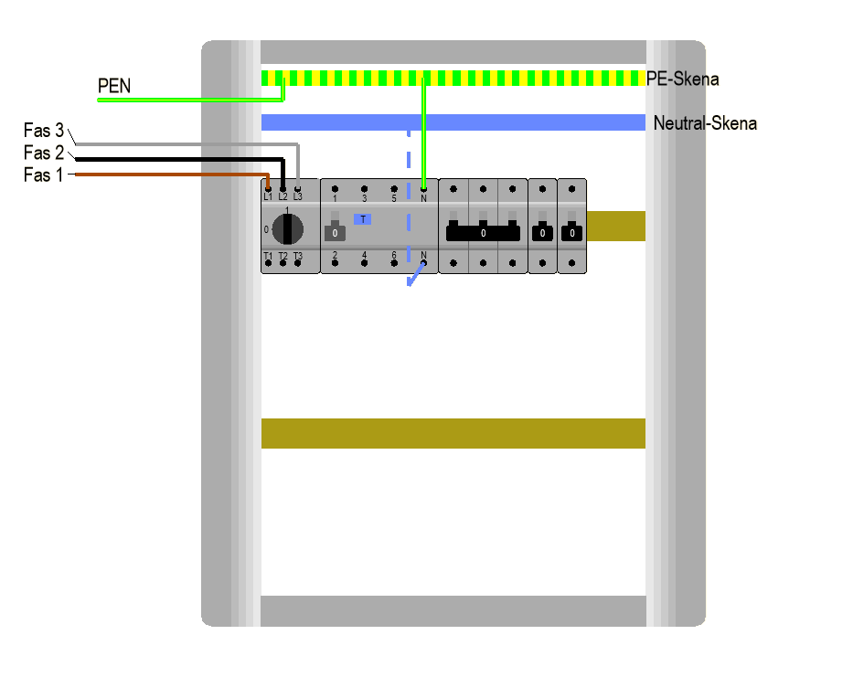
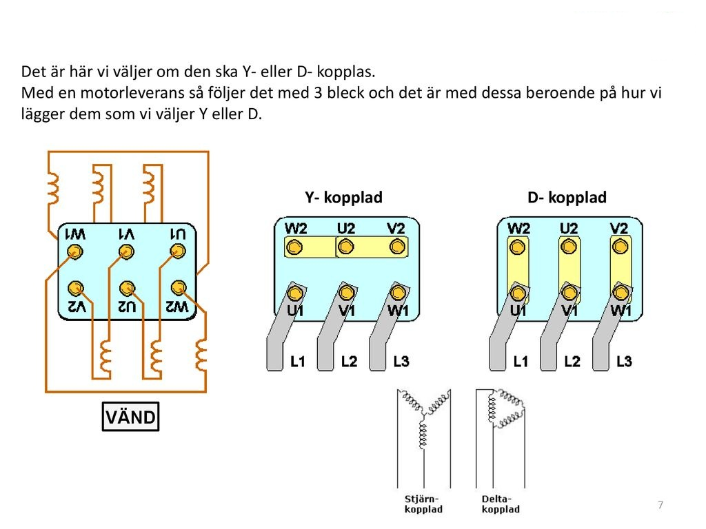

Trefas
Trefassystem & Generatorn
Det här kapitlet behandlar trefassystemet — från symmetriska och osymmetriska laster till neutralledarens funktion och hur sinusformad spänning genereras.
Avsnitt 5a
Symmetriska trefastlaster
En symmetrisk last belastar alla tre faser lika mycket — neutralledaren bär ingen ström.
Vad är en symmetrisk trefaslast?
En symmetrisk trefaslast belastar de tre olika faserna lika mycket, dvs impedansen i alla tre faserna och därmed är även strömmen lika stor.
- Returströmmar som kommer från lasterna till neutralskenan är då lika stora för varje fas och kommer att balansera varandra i nollpunkten.
- Det innebär att summaströmmen och spänningen blir noll i neutralpunkten (anläggningens nollpunkt).
- Resulterande potential = Noll volt — multimetern visar 0 V.
🔁 Fasströmmar
IL1 = IL2 = IL3
Alla lika stora → summan = 0
⚖️ Nollpunktsström
IN = IL1 + IL2 + IL3 = 0 A
Ingen ström i neutralledaren
📊 Vektordiagram
De tre vektorerna är exakt 120° förskjutna och tar ut varandra — resultanten är noll.
Fasördiagram – symmetrisk vs osymmetrisk last
Trefaskrets – symmetrisk last
Avsnitt 5b
Osymmetriska trefastlaster
En osymmetrisk last belastar faserna olika — en ström uppstår i neutralledaren.
Vad händer vid osymmetrisk last?
Detta är inte fallet vid en osymmetrisk trefaslast. I detta fallet är belastningen i de tre olika faserna olika stor — dvs impedansen i faserna är olika.
- Det innebär att strömmen i faserna inte balanserar varandra → nollpunktsström ≠ 0.
- Strömmen i faserna (nollpunkt) inte balanserar och därmed kommer anläggningens spänningen mot neutralpunkten.
- Det blir en potentialskillnad mellan transformatorns neutralpunkt och anläggningens neutralpunkt.
- Resulterande potential = > 0 V — multimetern visar mer än noll volt.
⚡ Fasströmmar
IL1 ≠ IL2 ≠ IL3
Olika stora → summan ≠ 0
⚖️ Nollpunktsström
IN = IL1 + IL2 + IL3 ≠ 0 A
Ström flödar i neutralledaren
📊 Vektordiagram
Vektorerna tar inte ut varandra — resultanten är större än noll.
Trefaskrets – osymmetrisk last
Avsnitt 5c
Neutralledaren
Neutralledaren kopplar ihop anläggningens neutralpunkt med transformatorns — och löser problemet med osymmetri.
Varför behövs neutralledaren?
Man löser problemet med osymmetrisk belastning genom att dra en neutralledare mellan anläggningens neutralpunkt och transformatorns neutralpunkt.
- I de fall man har en osymmetrisk belastning kommer det att gå en ström i neutralledaren till transformatorns neutralpunkt.
- Neutralledaren "städar upp" obalansen — spänningen mot noll hålls stabil för alla faser.
- Utan neutralledare (t.ex. i D-koppling) måste lasten vara symmetrisk — annars uppstår spänningsobalans.
Y-koppling
Har neutralpunkt — neutralledaren kan anslutas. Möjliggör både 230 V (fas–noll) och 400 V (fas–fas).
D-koppling
Har ingen neutralpunkt — ingen neutralledare. Används vid symmetrisk last där IN = 0.
Transformator 10/04
Primär D-koppling (10 kV), sekundär Y-koppling (400 V) — ger neutralpunkt på lågspänningssidan.
⚠️ Vad händer om neutralen bryts?
Om neutralledaren bryts försvinner den stabila återledaren. Strömmen tvingas gå i serie mellan apparater på olika faser — istället för var och en mot noll.
Varje apparat får 230 V (fas–noll)
L1 → Apparat → N
Stabilt och säkert
Apparaterna på L1 och L2 kopplas i serie mot varandra
Spänning upp till 400 V (fas–fas) fördelas
Spänningsdelning efter impedans: Den apparat med högst impedans (t.ex. en glödlampa) tar den största andelen av 400 V. Det kan leda till att lampor och elektronik exploderar eller fattar eld.
Innan: L1 = 10 A, L2 = 8 A, L3 = 7 A → IN = 1 A går i neutralen
Efter neutralbrott: strömmen tvingas via fas–fas (t.ex. L1–L2 = 400 V) → spänningsdelning → överspänning
Neutralledarens funktion
PEN-ledaren delas i elcentralen
I TN-C-S-system kombineras skyddsjord och nolla till en PEN-ledare fram till elcentralen. Där delas den obligatoriskt upp i separata PE- och N-skenor.

Avsnitt 5d
Generatorn & Sinusformad spänning
Växelström skapas av generatorer som snurrar i ett magnetfält. Resultatet är en sinusformad spänning med en frekvens av 50 Hz i Sverige.
🔩 Stator
Den stationära delen av generatorn — innehåller lindningarna för de tre faserna (L1, L2, L3). Magnettfältet inducerar spänning i lindningarna.
🔄 Rotator (Rotor)
Den roterande delen — en elektromagnet driven av t.ex. en ångturbin, vattenturbin eller dieselmotor. Snurrar inuti statorn och inducerar växelspänning.
⚡ En fas i taget
Rotorn passerar varje lindning en åt gången, 120° isär. Det skapar tre sinusvågor som är 120° förskjutna — ett trefassystem.
Frekvens & Period
Spänningsvärden – vad betyder 230 V?
Sinusvågan varierar hela tiden — 230 V är det effektiva värdet (RMS), inte toppvärdet.
Sinusformad spänning
Avsnitt 5e
EMK & Mot-EMK
EMK är spänningen som uppstår när en ledare och ett magnetfält rör sig i förhållande till varandra. Mot-EMK är det som skyddar en motor från att brinna upp.
⚡ EMK – Elektromotorisk kraft
Den spänning som induceras när en ledare rör sig genom ett magnetfält, eller när ett magnetfält rör sig förbi en ledare.
Det är precis så en generator fungerar — rotorn snurrar, magnetfältet passerar lindningarna, och spänning uppstår.
🔄 Mot-EMK
När en motor snurrar skapar motorns egna lindningar en spänning som går emot den spänning vi matar in. Det är ett elektriskt motstånd som hindrar strömmen från att bli oändligt stor.
Fältbegrepp
Skapas av permanenta magneter eller av ström som flödar genom en ledare.
Uppstår kring laddade föremål — dvs kring spänning.
I en växelströmsmotor växlar fältet riktning 50 gånger per sekund. Det är detta växlande fält som gör att energi kan föras över utan att delarna rör vid varandra — induktion.
Varför måste vi minska fasförskjutning?
Spolar (t.ex. i motorer) gör att strömmen släpar efter spänningen. Det skapar mycket reaktiv effekt (Q) som belastar elnätet i onödan utan att göra nyttigt arbete.
Lösning: En kondensator används för att motverka spolen. En spole får strömmen att sakta ner, medan en kondensator får den att skynda på — tillsammans tar de ut varandra, och vi får en bättre effektfaktor (cos φ).
Avsnitt 5f
Spole & Induktiv reaktans
En spole motverkar förändringar i ström. Ju högre frekvens eller induktans, desto större motstånd (reaktans) erbjuder spolen.
Formler
XL i Ohm (Ω), f i Hz, L i Henry (H)
ω i rad/s (vid 50 Hz: ω ≈ 314 rad/s)
Kombinerar rent motstånd R och reaktans XL
Räkneexempel
En krets har: U = 230 V, R = 55 Ω, L = 2 H, f = 50 Hz. Vad är strömmen?
Avsnitt 5g
Kondensator & Kapacitiv reaktans
En kondensator lagrar elektrisk energi och motverkar förändringar i spänning. Till skillnad mot spolen — ju högre frekvens, desto lägre motstånd.
Formel för kapacitiv reaktans
XC i Ohm (Ω), f i Hz, C i Farad (F)
Spole vs. Kondensator
- Högre f → högre XL
- Högre L → högre XL
- Ström efter spänningen
- Högre f → lägre XC
- Högre C → lägre XC
- Ström före spänningen
Avsnitt 5h
Fasförskjutning
Fasförskjutning uppstår när ström och spänning inte svänger i takt. I rent resistiva kretsar finns ingen förskjutning — men spolar och kondensatorer ändrar på det.
Sinusvåg — ström och spänning
Diagrammet visar spänning (U) och ström (I) över tid (t).
Ingen fasförskjutning
Om strömmen och spänningen startar, vänder och går genom noll samtidigt → ingen fasförskjutning.
Sker i rent resistiva kretsar, som en glödlampa eller värmeelement.
🌀 Spole → ström efter
En spole gör att strömmen släpar efter spänningen. Strömkurvan förskjuts åt höger i tid.
⊣⊢ Kondensator → ström före
En kondensator gör att strömmen leder spänningen — kurvan förskjuts åt vänster i tid.
Nollgenomgång & 1 fas
När nollgenomgång och bottengenomgång är densamma för ström och spänning = de är i fas (0° förskjutning). En fas = ett komplett svängningssystem.
Avsnitt 5i
Effekttyper — P, Q & S
I växelströmskretsar med spolar och kondensatorer finns tre typer av effekt. Bara den aktiva effekten gör verkligt arbete.
Den effekt som faktiskt gör nyttigt arbete — driver motorer, lyser lampor, värmer element.
Pendlar fram och tillbaka i kretsen — gör inget nyttigt arbete men belastar elnätet. Skapas av spolar och kondensatorer.
Den totala effekt som elnätet måste leverera — kombinationen av P och Q. Det är S som dimensionerar kablar och transformatorer.
Formel — Skenbar effekt
Effekttriangeln
P, Q och S bildar en rätvinklig triangel — precis som Pythagoras.
Avsnitt 5j
Verkningsgrad — η (eta)
Ingen maskin omvandlar energi utan förluster. Verkningsgraden η (eta) anger hur stor del av den inmatade effekten som faktiskt utnyttjas.
Formel
Exempel — elmotor 80 %
En motor tar in Pin = 1 000 W och har η = 0,80 (80 %).
Typiska verkningsgrader
| Apparat | η (typiskt) | Kommentar |
|---|---|---|
| Transformator | 95–99 % | Mycket effektiv energiöverföring |
| Elmotor (stor) | 85–95 % | Hög energiklass (IE3/IE4) |
| Lysrör / LED | 25–40 % | Resten omvandlas till värme |
| Bensinmotor | 25–35 % | Stor energiförlust som avgasvärme |
| Glödlampa | ≈ 5 % | 95 % förloras som värme — förbjuden i EU |
Avsnitt 5k
Y- och D-koppling — beräkningsexempel
I ett trefassystem kan en last kopplas antingen Y (stjärna) eller D (delta). Spänningen som varje del utsätts för skiljer sig — och därmed även strömmen och effekten.
Y-koppling (Stjärna)
Varje del kopplas mellan en fas och nollpunkten → fasspänning 230 V.
Ufas = 230 V
I = UfasR = 230100 = 2,3 A
Pfas = Ufas · I = 230 · 2,3 ≈ 530 W
Ptot = 3 · Pfas = 1 590 W ≈ 1,6 kW
Ptot = √3 · UH · I · cos φ
= 1,73 · 400 · 2,3 · 1 ≈ 1 591 W ✓
D-koppling (Delta)
Varje del kopplas direkt fas–fas → huvudspänning 400 V.
Ufas = 400 V
Ifas = UfasR = 400100 = 4 A
Pfas = Ufas · Ifas = 400 · 4 = 1 600 W
Ptot = 3 · Pfas = 4 800 W = 4,8 kW
IH = Ifas · √3 = 4 · 1,73 ≈ 6,9 A
Ptot = √3 · 400 · 6,9 · 1 ≈ 4 788 W ✓
Avsnitt 5l
Y/D-motorstart — mjuk start av elmotorer
En elmotor drar 5–8 gånger sin driftström vid direktstart. Y/D-start är en klassisk metod för att begränsa startströmmen och skydda elnätet.
Steg 1 — Starta i Y
Lindningarna kopplas i Y → varje lindning får 230 V (fasspänning).
- Startström = ⅓ av direktstart
- Startmoment = ⅓ av direktstart
- Lägre påfrestning på nät och mekanik
Steg 2 — Byt till D
När motorn nått ca 75–80 % av driftvarvtalet: koppla om till D → 400 V per lindning.
- Full drifteffekt uppnås
- Liten strömstöt vid omkoppling
- Motorn accelererar till full hastighet
Varför Y/D-start?
En motor som startar direkt i D (direktstart) drar en strömstöt som kan lösa ut säkringar, orsaka spänningsfall i elnätet och slita hårt på mekaniska delar.
Kopplingsblock — Y vs D i praktiken
Så här ser det ut när man väljer Y- eller D-koppling på en motors kopplingsplint. Byglingarnas placering avgör kopplingssättet.

Källa: BluePeak AB / ElVAab
Avsnitt 5m
RLC-kretsar — fasförskjutning i blandade kretsar
I rena DC-kretsar har vi bara resistorer (R). I växelströmskretsar tillkommer spolar (L) och kondensatorer (C) — och när alla tre förekommer i samma krets pratar vi om en RLC-krets.
Vad är R, L och C?
De tre bokstäverna står för tre olika typer av komponenter som alla påverkar ström och spänning på olika sätt i en växelströmskrets:
Bromsar strömmen — utan fasförskjutning. Omvandlar elektrisk energi till värme. Enhet: Ω.
Bromsar strömförändringar — ström ligger efter spänningen (90° fasförskjutning). Reaktans XL = 2π·f·L. Enhet: H (henry).
Lagrar laddning — ström ligger före spänningen (90° fasförskjutning, men åt andra hållet). Reaktans XC = 1/(2π·f·C). Enhet: F (farad).
L och C i serie
Z = XL − XC
U = UL − UC
I = UZ
XL > XC → induktiv (ström efter spänning)
XC > XL → kapacitiv (ström före spänning)
XL = XC → resonans, Z = 0
R, L och C i serie
|Z| = √(R² + (XL − XC)²)
U = √(UR² + (UL − UC)²)
I = U|Z|
cos φ = R|Z|
tan φ = XL − XCR
R, L och C i parallell
Spänningen är gemensam — ström beräknas per gren, sedan adderas de som vektorer.
IR = UR | IL = UXL | IC = UXC
Itot = √(IR² + (IC − IL)²)
cos φ = IRItot
Avsnitt 5n
XL vs XC — frekvensslider
Induktiv reaktans XL ökar med frekvensen — kondensatorns XC minskar. Dra i slidern och se vad som händer.
Vad ser du?
Ökar linjärt med frekvensen. Dubbel frekvens → dubbel XL.
Minskar omvänt med frekvensen. Dubbel frekvens → halv XC.
Avsnitt 5o
Vad händer om…?
Klicka på ett kort för att se svaret. Testa dig själv innan du tittar!
Avsnitt
Växelriktare & Frekvensomriktare (VFD)
🔀 Växelriktare — DC → AC
En växelriktare (engelska: inverter) omvandlar likspänning (DC) till växelspänning (AC). Den är kärnan i solcellsanläggningar, UPS-system och elfordon.
t.ex. 48 V DC
t.ex. 230 V / 400 V AC
⚙️ Frekvensomriktare (VFD)
En frekvensomriktare (VFD = Variable Frequency Drive, även kallad frekvensomformaren eller frekvensomvandlare) styr varvtalet på en elmotor genom att variera frekvens och spänning. Används i pumpar, fläktar, kompressorer och transportband.
Nätet likriktas först, sedan skapar en växelriktare en ny AC-signal med önskad frekvens och spänning.
Motorns varvtal är proportionellt mot frekvensen. Sänk frekvensen → lägre varvtal.
VFD:en kan starta motorn mjukt från 0 Hz — eliminerar startström och mekanisk stöt.
🔌 Indata & Utdata
- 1-fas 230 V / 50 Hz
- 3-fas 400 V / 50 Hz
- 3-fas 0–50 Hz (eller högre)
- Spänning skalas med frekvens (U/f = konstant)
- Från < 1 kW (liten pump)
- Till hundratals kW (industri)
📋 Namnvarianter — samma sak
Samma enhet kallas olika beroende på sammanhang och tillverkare:
| Namn | Förkortning | Vanlig i |
|---|---|---|
| Frekvensomriktare | — | Sverige (industri, el-branschen) |
| Frekvensomvandlare | — | Sverige (vardagligt) |
| Frekvensomformaren | — | Sverige (äldre term) |
| Variable Frequency Drive | VFD | Engelska (USA) |
| Variable Speed Drive | VSD | Engelska (Europa) |